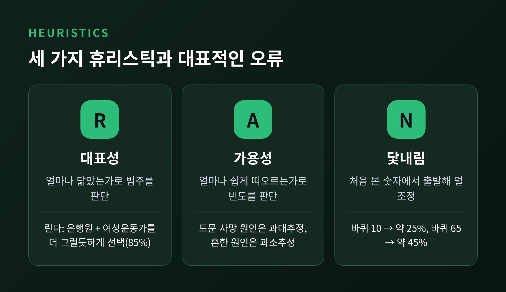
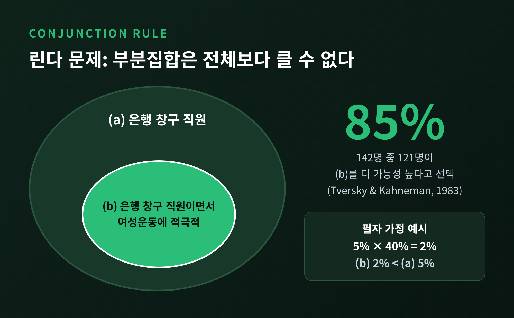
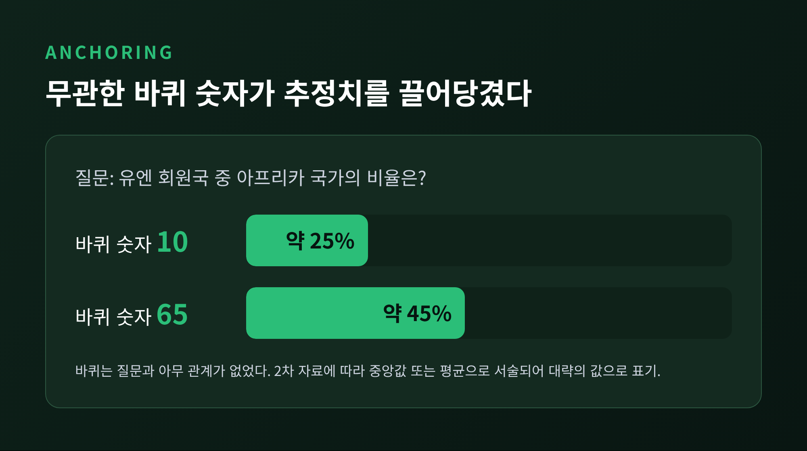
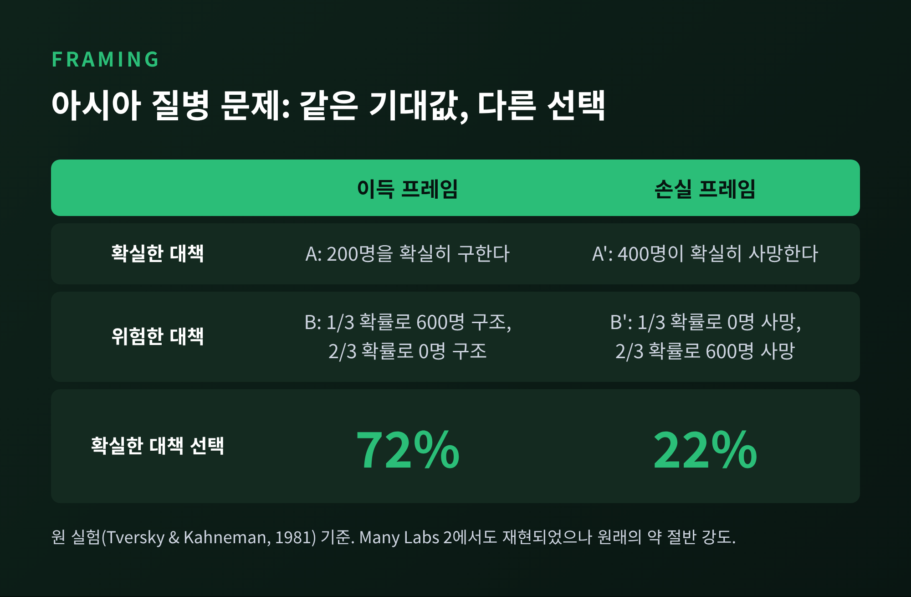
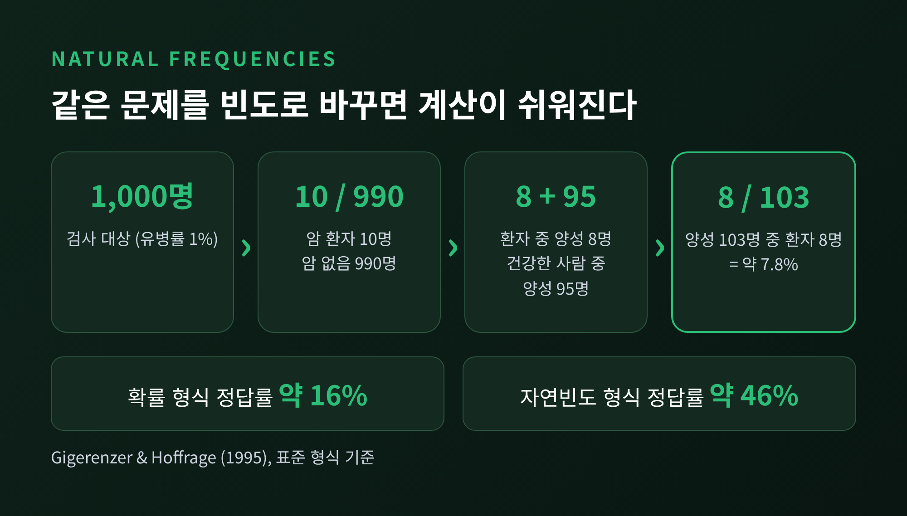
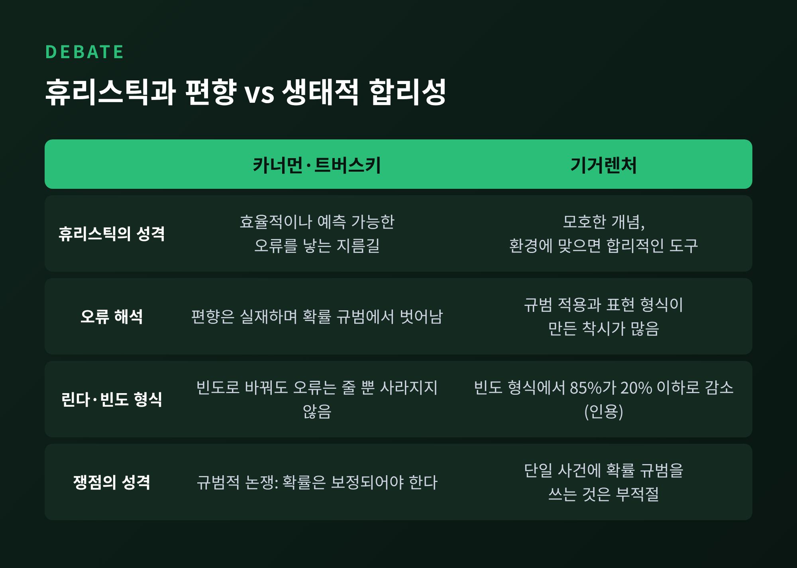

휴리스틱과 편향 — 가격·투자·보험 판단은 왜 체계적으로 틀어질까

이번 글에서는 카너먼과 트버스키가 밝힌 휴리스틱과 편향을 정리해 보겠습니다. 대표성, 가용성, 닻내림이라는 세 가지 어림짐작이 가격 판단과 투자, 보험 가입에서 어떤 오류를 만드는지 살펴봅니다. 끝에서는 린다 문제와 아시아 질병 문제의 재현 여부, 그리고 게르트 기거렌처의 반론까지 함께 다룹니다.
핵심부터 말씀드리면 이렇습니다. 어림짐작은 대개 쓸 만하지만, 오류가 무작위가 아니라 일정한 방향으로 쏠립니다. 그 쏠림이 있다는 점이 이 연구의 가치입니다. 다만 그 오류가 얼마나 '비합리적'인지는 지금도 논쟁 중입니다.
■ 세 가지 휴리스틱, 1974년 Science 논문의 출발점
1974년 『Science』에 실린 「불확실성 아래의 판단: 휴리스틱과 편향」이 시작이었습니다. 저자들은 사람이 불확실한 상황에서 세 가지 지름길을 쓴다고 정리했습니다.
대표성은 어떤 대상이 범주에 속하는지를 그 범주와 얼마나 닮았는지로 판단하는 방식입니다. 가용성은 사례가 얼마나 쉽게 떠오르는지로 빈도와 가능성을 어림하는 방식입니다. 닻내림은 어떤 값에서 출발해 조금씩 조정해 가는 방식입니다.
저자들은 이 지름길이 효율적이고 대체로 잘 작동한다고 인정했습니다. 동시에 예측 가능한 체계적 오류를 낳는다고 보았습니다. 이 논문은 1983년 무렵 이미 420건 넘게 인용되었고, 카너먼은 2002년 노벨 경제학상을 받았습니다. 심리학의 통찰을 경제학에 통합한 공로였습니다. 트버스키는 1996년에 세상을 떠나 수상자에서 빠졌습니다.

경제 글이니 짚어 둘 점이 있습니다. 전통 경제학은 사람이 확률을 올바르게 계산한다고 가정했습니다. 이 연구는 그 가정이 틀리는 지점을 구체적인 실험으로 보여 주었습니다. 앞선 글에서 다룬 전망이론의 손실회피와는 다른 층위입니다. 전망이론이 '선택의 가치 함수'를 다룬다면, 휴리스틱 연구는 '확률과 수치를 어떻게 어림하는가'를 다룹니다.
■ 대표성 휴리스틱, 닮았으니 그럴 것이라는 착각
대표성 휴리스틱의 대표 사례가 린다 문제입니다. 설명은 이렇습니다. 린다는 31세의 미혼 여성으로, 직설적이고 매우 똑똑하며 철학을 전공했습니다. 학창 시절에는 차별과 사회정의 문제에 깊은 관심을 가졌습니다. 질문은 둘 중 무엇이 더 가능성 높으냐는 것입니다. (a) 린다는 은행 창구 직원이다. (b) 린다는 은행 창구 직원이며 여성운동에 적극적이다.
1983년 연구에서 UBC 학생 142명 중 121명, 즉 85%가 (b)를 골랐습니다. 이는 확률의 기본 규칙에 어긋납니다. '은행원이면서 페미니스트'는 '은행원'의 부분집합이므로 더 클 수 없습니다. 이를 연언 오류라고 부릅니다.

숫자로 직관을 확인해 보겠습니다. 아래는 제가 임의로 가정한 계산 예시이며 연구 결과가 아닙니다. 린다 같은 사람이 은행원일 확률을 5%, 그중 여성운동에 적극적일 확률을 40%라고 가정하면 (b)의 확률은 5%×40%, 곧 2%입니다. (a)의 5%보다 작을 수밖에 없습니다. 아무리 설정을 바꿔도 (b)가 (a)를 넘을 수 없습니다.
같은 구조가 대학원 전공 추측에서도 드러났습니다. 카너먼의 노벨 강연 논문이 소개한 Tom W 연구에서는 사람들이 전공의 실제 비율, 곧 기저율을 거의 보지 않았습니다. 인물이 특정 전공 학생과 얼마나 닮았는지에 대한 판단과 그 전공일 확률 판단의 상관이 0.98에 달했습니다. 닮음이 곧 확률이 된 것입니다.
가격 판단으로 옮기면 이렇습니다. 최근 몇 분기 연속 잘 나가는 기업의 주식을 '좋은 기업의 전형'과 닮았다는 이유만으로 고르는 경우입니다. 기저율, 곧 그런 기업 중 실제로 오래 성공하는 비율은 따져 보지 않습니다. 이 사례는 연구가 직접 증명한 것이 아니라, 대표성 논리를 투자에 적용해 본 필자의 해석입니다.
■ 가용성 휴리스틱, 떠오르는 만큼 흔하다고 믿는다
가용성은 머릿속에 쉽게 떠오르는 사례일수록 더 자주 일어난다고 판단하는 경향입니다. 1978년 리히텐슈타인 연구진은 사람들이 사망 원인의 빈도를 어떻게 판단하는지 조사했습니다. 결과는 "일관되지만 체계적으로 편향된" 척도였습니다. 드문 원인은 과대추정하고 흔한 원인은 과소추정했습니다. 편향은 매체 노출, 기억에 남는 정도, 상상하기 쉬운 정도와 관련이 있었습니다. 편향을 피하라고 지시해도 참가자들은 교정하지 못했습니다.
보험 가입에 이 논리를 적용해 보겠습니다. 아래는 연구가 직접 보인 결과가 아니라, 제 해석임을 먼저 밝힙니다. 방금 재난 뉴스를 본 사람은 그 사건이 쉽게 떠올라 보험을 서둘러 찾습니다. 반대로 한동안 재난이 없었던 지역에서는 위험이 머릿속에서 멀어집니다.
이와 관련된 실험 증거가 있습니다. 쿤로이터(Kunreuther)와 폴리(Pauly)는 허리케인 피해를 가정한 다기간 보험 구매 실험을 했습니다. 참가자의 약 63%는 기대효용 이론과 일치하게 행동했습니다. 하지만 미가입자 다수가 손실을 겪은 뒤, 특히 후회를 표현한 경우에 보험에 들었습니다. 손실이 없었던 가입자는 좀처럼 해지하지 않았습니다. 이 실험은 확률과 손실액을 참가자에게 알려 주고 진행되었습니다. 그러니 가용성 그 자체보다 '경험과 감정이 구매를 움직인다'는 증거로 읽는 편이 정확합니다.
미국 연방 홍수보험 제도를 다룬 연구도 비슷한 문제를 짚었습니다. 재난 전의 오류를 근시안, 망각, 낙관, 관성, 단순화, 무리짓기라는 여섯 가지 편향으로 설명했습니다. 가용성이라는 이름은 목록에 없습니다. 다만 '최근 일어난 일을 크게 보고 오래된 일은 잊는' 흐름과 결이 같습니다.
■ 닻내림, 무관한 숫자도 판단을 끌어당긴다
닻내림 실험은 가장 선명합니다. 트버스키와 카너먼은 참가자들 앞에서 바퀴를 돌렸습니다. 바퀴가 10에서 멈춘 집단에게 '유엔 회원국 중 아프리카 국가의 비율이 이 숫자보다 높습니까, 낮습니까'를 묻고 실제 비율을 추정하게 했습니다. 10이 나온 집단은 평균 약 25%, 65가 나온 집단은 약 45%라고 답했습니다. (2차 자료에 따라 중앙값 또는 평균으로 서술되어 있어, 이 글에서는 대략의 값으로 적습니다.) 바퀴는 질문과 아무 관계가 없었습니다.

가격에 적용한 사례가 부동산입니다. Northcraft와 Neale(1987)의 연구에서는 학생과 중개인에게 같은 집을 보여 주되 호가만 다르게 제시했습니다. 중개인은 호가의 영향을 받지 않았다고 말했지만 학생과 마찬가지로 영향을 받았다고 전해집니다. 이 내용은 2차 자료로 확인한 것이며, 원 논문은 직접 보지 못했습니다.
실제 거래 자료도 있습니다. 미국 주택 거래 14,000건 이상을 분석한 연구는 호가가 높을수록 낙찰가도 높다는 점을 확인했습니다. 닻내림과 일치하는 결과입니다. 다만 규모는 크지 않았습니다. 평균적인 주택에서 호가를 10~20% 올렸을 때 낙찰가는 약 117~163달러 높아지는 정도였습니다. 닻은 분명 작동하지만, 현실 시장에서는 그 힘이 실험실보다 약합니다.
이 효과는 얼마나 믿을 만할까요. 2014년 Many Labs 프로젝트에서는 13개 효과 중 10개가 일관되게 재현되었고, 앵커링이 거기에 포함되었습니다. 효과의 크기는 원 연구보다 더 크게 나타났습니다. 한편 무작위 난수나 주사위를 닻으로 쓴 일부 연구는 재현에 실패했다고 보고됩니다. 닻이 통하는 조건이 따로 있다는 뜻입니다.
■ 아시아 질병 문제와 프레이밍의 재현성
가격과 투자에 직접 닿는 또 하나의 실험이 아시아 질병 문제입니다. 600명이 사망할 것으로 예상되는 질병이 있고, 두 대책이 있습니다. 이득 프레임에서는 A가 '200명을 확실히 구한다', B가 '3분의 1 확률로 600명을 구하고 3분의 2 확률로 아무도 구하지 못한다'입니다. 손실 프레임에서는 A'가 '400명이 확실히 사망한다', B'가 '3분의 1 확률로 아무도 죽지 않고 3분의 2 확률로 600명이 사망한다'입니다. 두 프레임의 기대값은 같습니다.
원 실험에서는 이득 프레임에서 72%가 확실한 A를, 손실 프레임에서는 22%만 확실한 A'를 골랐습니다. 같은 내용을 어떻게 말하느냐에 따라 선택이 뒤집힌 것입니다.

이 결과에는 반론이 있었습니다. "200명이 구해진다"를 '최소 200명'으로 읽는 언어적 착시라는 주장입니다. Data Colada는 표본을 약 2.5배로 키워 재현했고, '정확히'라는 단어를 넣어도 프레이밍 효과가 강하게 남았습니다. 한 수업에서 2년간 모은 250명 자료에서는 확실한 구조를 63%, 확실한 사망을 25%가 골랐습니다.
더 큰 규모의 검증도 있습니다. Many Labs 2는 28개 발견을 60개 이상의 연구소에서 다시 검증해 14개가 재현되고 14개가 재현되지 않았습니다. 프레이밍 효과는 재현되었습니다. 다만 원래보다 약 절반 수준의 강도였습니다. 효과는 있으나 처음 알려진 것보다 작습니다. 이 균형이 이 분야의 정직한 요약일 것입니다.
■ 기거렌처의 반론, 편향인가 생태적 합리성인가
독일 심리학자 게르트 기거렌처는 1996년 이 프로그램에 정면으로 반박했습니다. 주장은 세 가지로 갈립니다.
첫째, 휴리스틱이 모호하다는 것입니다. 기저율 무시는 대표성으로, 그 반대 현상은 닻내림으로 설명하는 식이면 "모든 것을 설명하면서 아무것도 설명하지 못한다"고 보았습니다. 둘째, 확률 법칙을 린다 같은 단일 사건에 곧바로 적용하는 것이 부적절하다고 보았습니다. 일상어의 '그리고'나 '가능성'은 수학 용어와 다를 수 있다는 지적입니다. 셋째, 표현 형식이 결과를 바꾼다는 것입니다.
그가 인용한 연구에서 린다 문제의 연언 오류는 약 85%에서 빈도 형식으로 제시하면 20% 이하로 줄었습니다. 베이즈 추론에서는 이 효과가 더 선명합니다. 1995년 기거렌처와 호프라게의 실험에서 정답 비율은 확률 형식에서 약 16%, 자연빈도 형식에서 약 46%였습니다.

예를 하나 보겠습니다. 유병률 1%, 검사 민감도 80%, 위양성률 9.6%인 검사에서 양성이 나왔을 때 실제로 병이 있을 확률은 약 7.8%입니다. 이를 1,000명으로 풀어 쓰면 쉬워집니다. 10명이 환자이고 그중 8명이 양성, 건강한 990명 중 95명이 양성이므로 양성 103명 중 환자는 8명입니다. 이전 연구에서 의사들이 70~80%로 답한 경우가 많았다고 합니다. 계산 능력이 아니라 정보의 모양이 문제일 수 있다는 것이 기거렌처의 요지입니다.
가용성에 대한 반박도 있습니다. 1998년 Sedlmeier, Hertwig, Gigerenzer는 철자 위치 판단을 다시 검증했습니다. 가용성을 '떠오르는 개수'와 '떠오르는 속도'로 각각 구현해 시험했지만 어느 쪽도 데이터를 설명하지 못했습니다. 사람들은 실제 빈도를 따라가되 평균 쪽으로 쏠린다는 설명이 더 잘 맞았습니다.
카너먼과 트버스키도 가만히 있지 않았습니다. 1996년의 답변에서 두 사람은 빈도 형식에서 일부 착각이 줄어들 수는 있지만 사라지지는 않는다고 맞섰습니다. 1,000명의 여성을 가정한 린다 문제의 빈도 버전에서도 '페미니스트 은행원' 추정(중앙값 50 초과)이 '은행원' 추정(13~20)보다 높았다고 보고했습니다. 또한 두 입장의 차이는 서술의 문제가 아니라 규범의 문제라고 짚었습니다. 확률 판단이 보정되어야 하느냐를 두고 갈렸다는 뜻입니다.

■ 정리하며: 그래서 무엇을 달리 해 볼까
두 입장은 생각보다 가까울지도 모릅니다. 카너먼도 2009년 게리 클라인과 쓴 논문에서 직관이 믿을 만한 조건을 두 가지로 꼽았습니다. 환경이 규칙적이어서 패턴을 배울 수 있어야 하고, 그것을 익힐 기회가 충분해야 한다는 조건입니다. 그러면서 "주관적 확신은 판단 정확도의 믿을 만한 지표가 아니다"라고 적었습니다. 기거렌처가 말하는 환경과의 궁합 문제와 닿는 지점입니다.
이를 가격, 투자, 보험에 적용하면 몇 가지 습관이 남습니다. 아래는 연구에서 직접 도출된 처방이 아니라 필자의 제안입니다.
- 호가나 정가를 보면 그 숫자를 잠시 지우고, 직접 정한 기준으로 먼저 가치를 어림해 봅니다.
- '닮았다'는 느낌이 들 때는 그런 대상이 실제로 얼마나 흔한지, 기저율을 한 번 찾아봅니다.
- 보험은 최근 뉴스가 아니라 발생 확률과 손실 크기를 숫자로 적고 판단합니다.
- 확률은 가능하면 '1,000명 중 몇 명'처럼 빈도로 바꿔 읽습니다.
결국 남는 것은 하나입니다. "지름길은 버릴 대상이 아니라, 어디서 틀어지는지 알고 쓸 대상이다."
연구가 모든 것을 설명해 주지는 않습니다. 재현 연구는 효과가 처음보다 작을 수 있음을 알려 주었고, 반론은 오류의 해석이 하나가 아님을 알려 주었습니다. 그럼에도 제가 직접 가격표 앞에서 한 번쯤 멈칫하게 된다면, 이 연구는 이미 제 몫을 한 셈입니다.